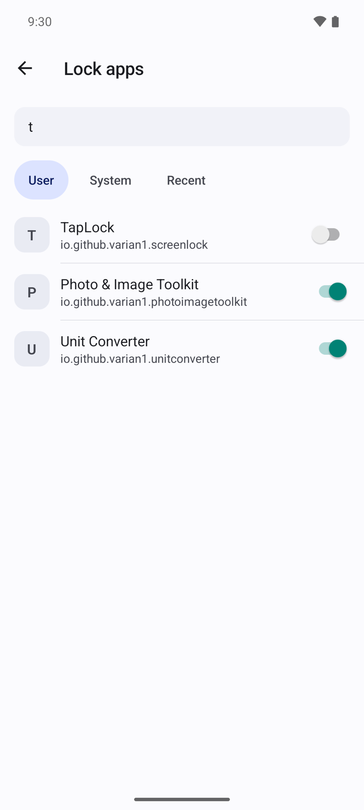

यह क्या करता है
AppLock आपके चुने हुए ऐप्स के आगे एक लॉक स्क्रीन लगा देता है। कोई लॉक किया हुआ ऐप खोलता है, तो उसे ऐप देखने से पहले आपका PIN, पैटर्न या पासवर्ड डालना होता है, या आपके फ़िंगरप्रिंट से खोलना होता है। ऐप के अंदर इसका नाम "App Lock" लिखा दिखता है।
- कोई अकाउंट नहीं। आपका PIN, लॉक किए गए ऐप्स की सूची, सिक्योरिटी लॉग और घुसपैठिए की फ़ोटो आपके फ़ोन में ही रहती हैं और कभी अपलोड नहीं होतीं।
- जो बार-बार गलत कोड डालता है, यह उसकी फ़ोटो खींच सकता है।
- PIN भूल जाएँ, तो रिकवरी कोड से आप वापस अंदर आ सकते हैं।
- विज्ञापनों के साथ मुफ़्त। ऐप लॉक करना हमेशा मुफ़्त है। एक बार की Premium खरीद से विज्ञापन हट जाते हैं और अतिरिक्त सुविधाएँ मिलती हैं।
शुरू करें
- AppLock खोलें और Get started पर टैप करें।
- How do you want to unlock? के नीचे PIN, Pattern या Password में से एक चुनें।
- उसे डालें, फिर पुष्टि के लिए दोबारा डालें। PIN में 6 अंक होते हैं। पैटर्न में कम से कम 4 बिंदु जुड़ने चाहिए। पासवर्ड में कम से कम 4 अक्षर होने चाहिए। पैटर्न या पासवर्ड के लिए हर बार डालने के बाद Continue पर टैप करें।
- Save your recovery code पर 8 अंकों का कोड लिख लें और उसे सुरक्षित जगह रखें। यह कोड आपको सिर्फ़ एक बार दिखता है। PIN, पैटर्न या पासवर्ड भूलने पर वापस आने का यही एकमात्र रास्ता है।
- I’ve saved this code somewhere safe पर टिक करें और Continue पर टैप करें।
अब आप होम स्क्रीन पर हैं। जब तक आप अनुमतियाँ नहीं देते और पहला ऐप लॉक नहीं करते, यहाँ Protection off दिखता है।
अनुमतियाँ दें
AppLock किसी ऐप को तभी लॉक कर सकता है, जब Android उसे यह पता लगाने दे कि ऐप खुला है, और लॉक स्क्रीन को ऊपर दिखाने दे। इसके लिए दो अनुमतियाँ चाहिए: Accessibility और Display over other apps। बाकी अनुमतियाँ वैकल्पिक हैं।
- होम स्क्रीन पर Finish setup या Permissions पर टैप करें।
- Accessibility पर टैप करें। AppLock पहले What Accessibility access does नाम का पेज दिखाता है। उसे पढ़ें।
- I understand — open settings पर टैप करें। सहमत न हों, तो Not now पर टैप करें: कुछ नहीं बदलता और कोई सेटिंग नहीं खुलती।
- जो Android सेटिंग स्क्रीन खुले, उसमें AppLock की सेवा चालू करें, फिर AppLock में वापस आएँ।
- Display over other apps पर टैप करें और Android सेटिंग स्क्रीन में इसे अनुमति दें।
- और जो अनुमति देना चाहें, उसकी पंक्ति पर टैप करें। अनुमति मिलने पर पंक्ति में Granted दिखता है।

AppLock Accessibility क्यों माँगता है। AppLock Android की Accessibility सेवा का उपयोग सिर्फ़ एक काम के लिए करता है: यह जानना कि अभी कौन-सा ऐप सामने आया है, ताकि आपके चुने हुए ऐप्स पर लॉक स्क्रीन दिखा सके।
- यह क्या करता है: यह सिर्फ़ अभी खुले ऐप का नाम देखता है, और कुछ नहीं। जब कोई लॉक किया हुआ ऐप अनलॉक होता है या गलत कोड डाला जाता है, तो उस ऐप का नाम आपके फ़ोन के Security log में सेव हो जाता है, ताकि आप उसे देख सकें।
- यह क्या कभी नहीं करता: यह स्क्रीन की सामग्री, कीस्ट्रोक, पासवर्ड, संदेश या स्क्रीन पर दिखने वाला कोई भी और डेटा नहीं पढ़ता, न AppLock में और न किसी दूसरे ऐप में। आपके डिवाइस से कुछ भी बाहर नहीं भेजा जाता।
- आप इसे कभी भी Android Settings में बंद कर सकते हैं। तब AppLock लॉक स्क्रीन नहीं दिखा पाएगा।
बाकी अनुमतियाँ किसलिए हैं।
- Display over other apps: लॉक स्क्रीन को लॉक किए गए ऐप के ऊपर दिखने देती है।
- Usage access: यह पक्का करने में मदद करती है कि सुरक्षा ठीक से काम कर रही है।
- Notifications: लॉक के संकेत और सेंध लगाने की कोशिशों की सूचना देती हैं।
- Camera (वैकल्पिक): अनलॉक में असफल होने वाले की फ़ोटो खींचता है।
- Notification access: लॉक किए गए ऐप्स की नोटिफ़िकेशन सामग्री छिपाती है।
- Ignore battery optimization: सुरक्षा को बैकग्राउंड में चालू रखती है।
हर अनुमति का उपयोग सिर्फ़ आपके फ़ोन पर होता है।

लॉक करने के लिए ऐप चुनें
- होम स्क्रीन पर Lock apps पर टैप करें।
- ऐप ढूँढें। Search apps में उसका नाम लिखें, या User, System और Recent टैब के बीच बदलें। Recent में सबसे नए इंस्टॉल किए ऐप्स पहले दिखते हैं।
- जिस ऐप को लॉक करना है, उसके पास का स्विच चालू करें।
- वापस जाएँ। होम स्क्रीन पर Protected और लॉक किए गए ऐप्स की संख्या दिखती है।

किसी ऐप को हमेशा के लिए अनलॉक करना हो, तो Lock apps दोबारा खोलें और उसका स्विच बंद कर दें।

लॉक किया हुआ ऐप खोलें
- अपना लॉक किया हुआ कोई ऐप खोलें। लॉक स्क्रीन तुरंत उसे ढक लेती है।
- अपना PIN, पैटर्न या पासवर्ड डालें। अगर आपने Unlock with biometrics चालू किया है, तो फ़िंगरप्रिंट भी इस्तेमाल कर सकते हैं।
- गलत होने पर आप फिर कोशिश कर सकते हैं। बहुत ज़्यादा गलत कोशिशों के बाद थोड़ी देर रुकना पड़ता है।
AppLock खुद भी इसी तरह लॉक रहता है, इसलिए कोई और आपकी सेटिंग नहीं बदल सकता।

लॉक करने का तरीका बदलें
- होम स्क्रीन पर Settings पर टैप करें।
- Appearance में System, Light या Dark चुनें।
- Re-lock में चुनें कि अनलॉक किया हुआ ऐप दोबारा कब लॉक हो: ऐप छोड़ते ही Immediately, On screen off, या After 5 min।
- Security में Unlock with biometrics चालू करें। पहले आपको अपने PIN, पैटर्न या पासवर्ड की पुष्टि करनी होगी। इसके लिए फ़ोन में फ़िंगरप्रिंट या चेहरा पहले से सेट होना चाहिए।
- Protection में Scramble the PIN pad चालू करें। इससे नंबर वाली कुंजियाँ हर बार अलग क्रम में आती हैं, इसलिए टैप की जगह देखकर कोई आपका PIN नहीं अंदाज़ सकता।
- लॉक किए गए ऐप्स के संदेश निजी रखने के लिए Hide notification content for locked apps चालू करें। इसके लिए Permissions में Notification access चाहिए।
- Disguise में Hide from Recents चालू करें, ताकि AppLock हाल के ऐप्स की सूची में न दिखे।

देखें कि किसने अंदर आने की कोशिश की
- Settings खोलें और Intruder photo after failed attempts चालू करें।
- Permissions खोलें और Camera को अनुमति दें।
- अब से लॉक स्क्रीन पर लगातार तीन बार गलत कोड डालने पर फ़्रंट कैमरा फ़ोटो खींच लेगा।
- फ़ोटो देखने के लिए होम स्क्रीन पर Intruder photos पर टैप करें। हर फ़ोटो के साथ वह ऐप दिखता है जो खोला गया था।
- अनलॉक, असफल कोशिशें और सेटिंग में बदलाव देखने के लिए Security log पर टैप करें।

PIN भूल जाएँ तो वापस अंदर आएँ
- AppLock खोलें। अनलॉक स्क्रीन पर Can’t get in? पर टैप करें।
- आपने जो 8 अंकों का रिकवरी कोड सेव किया था, उसे डालें और Continue पर टैप करें।
- नया PIN, पैटर्न या पासवर्ड सेट करें। इसके बाद आपको नया रिकवरी कोड मिलता है; पुराना कोड काम करना बंद कर देता है।
PIN याद रहते हुए नया रिकवरी कोड चाहिए, तो Settings खोलें और Replace recovery code पर टैप करें।
Premium
Premium एक बार का भुगतान है, सब्सक्रिप्शन नहीं। Settings खोलें और Unlock Premium पर टैप करें। इसके बिना भी ऐप लॉक करना मुफ़्त रहता है। Premium में आपको मिलता है:
- कोई विज्ञापन नहीं।
- Fake crash screen (long-press to unlock): लॉक स्क्रीन दिखाने के बजाय लॉक किया हुआ ऐप ऐसा दिखता है जैसे क्रैश हो गया हो।
- डिसगाइज़ आइकन: अपनी होम स्क्रीन पर AppLock का आइकन और नाम बदलकर Calculator, Notes या Weather कर सकते हैं। Calculator के साथ आप Open a real calculator instead चालू कर सकते हैं और Secret code सेट कर सकते हैं: कोड टाइप करके = दबाएँ, तो AppLock खुल जाएगा। आपका PIN भी हमेशा चलता है।
- घुसपैठियों की फ़ोटो का पूरा इतिहास। मुफ़्त संस्करण में सबसे नई 5 फ़ोटो दिखती हैं।
- Export backup: आपकी सेटिंग और लॉक सूची की एन्क्रिप्टेड कॉपी, जो आपके चुने पासवर्ड से सुरक्षित रहती है। Restore backup मुफ़्त है।
पहले Premium खरीदा हो, तो Settings में Restore purchases पर टैप करें।
Questions
AppLock को Accessibility अनुमति क्यों चाहिए? सिर्फ़ यह जानने के लिए कि अभी कौन-सा ऐप खुला है, ताकि आपके लॉक किए ऐप्स पर लॉक स्क्रीन दिखा सके। यह कभी नहीं पढ़ता कि आपकी स्क्रीन पर क्या है या आप क्या टाइप करते हैं। ऊपर "अनुमतियाँ दें" देखें।
होम स्क्रीन पर "Protection off" दिख रहा है। क्या गड़बड़ है? या तो Accessibility या Display over other apps की अनुमति नहीं दी गई है, या अभी कोई ऐप लॉक नहीं किया गया है। अनुमतियों की सूची खोलने के लिए Finish setup पर टैप करें, फिर Lock apps जाँचें।
क्या मैं AppLock को पूरी तरह छिपा सकता हूँ? नहीं। Android इंस्टॉल किए हुए ऐप का आइकन हमेशा रखता है। Premium में आप आइकन और नाम की जगह कोई दूसरा रूप चुन सकते हैं।
मैं PIN भूल गया और रिकवरी कोड भी खो दिया। क्या आप रीसेट कर सकते हैं? नहीं। AppLock बिना अकाउंट के ऑफ़लाइन चलता है, इसलिए ईमेल से रीसेट नहीं होता। वापस आने का एकमात्र रास्ता रिकवरी कोड है। उसे सुरक्षित जगह रखें।
क्या बैकअप में मेरा PIN या घुसपैठियों की फ़ोटो होती हैं? नहीं। बैकअप रिस्टोर करने के बाद ऐप पहले आपसे नया PIN, पैटर्न या पासवर्ड सेट करवाता है।
Privacy
आपका PIN, लॉक किए गए ऐप्स, सिक्योरिटी लॉग और घुसपैठियों की फ़ोटो आपके डिवाइस में ही रहती हैं और कभी अपलोड नहीं होतीं। मुफ़्त संस्करण में Google AdMob के विज्ञापन दिखते हैं। पूरी प्राइवेसी पॉलिसी पढ़ें।